A cell generally has only one or two sets of genomic DNA, and whereas proteins and RNA molecules can, if damaged, be quickly replaced using information encoded in the DNA, the DNA molecules themselves are irreplaceable. Maintaining the integrity of the information contained in DNA is therefore a cellular imperative, and an elaborate set of DNA repair systems is present in every cell. As described in Chapter 12, DNA can be damaged by a variety of processes, some spontaneous, some catalyzed by environmental agents. In addition, replication can occasionally leave mispaired bases. The chemistry of DNA damage is diverse and complex. Not surprisingly, the cellular response includes a wide range of enzymatic systems that catalyze some of the most interesting chemical transformations to be found in DNA metabolism. We will first examine the effects of alterations in DNA sequence and then turn to specific repair systems.
| There is no better way of illustrating
the importance of DNA repair than to consider the effects
of unrepaired DNA damage (a lesion). The most serious
outcome is a change in the base sequence of the DNA,
which if replicated and transmitted to future cell
generations becomes permanent. Such permanent changes in
the nucleotide sequence of DNA are called mutations.
Mutations can range from the replacement of one base pair
with another (substitution mutation) to the addition or
deletion of one or more base pairs (insertion or deletion
mutations). If the mutation affects nonessential DNA or
if it has a negligible effect on the function of a gene,
it is called a silent mutation.
Favorable mutations that confer some advantage to the
cell in which they occur are rare, although the frequency
is sufficient to provide the variation necessary for
natural selection and thus evolution. The majority of
mutations, however, are deleterious to the cell. In mammals there is a strong correlation between the accumulation of mutations and cancer, as seen from a simple test for mutagenic compounds developed by Bruce Ames (Fig. 24-17). The Ames test measures the potential of a given chemical compound to promote certain easily detected mutations in a specialized bacterial strain. Few of the chemicals that we might encounter day to day score as mutagens in this test. However, of the compounds known to be carcinogenic from extensive animal trials, more than 90% are also found to be mutagenic in the Ames test. Because of the strong correlation between mutagenesis and carcinogenesis, the Ames test for mutagens is widely used as a rapid and inexpensive screen for potential carcinogens. |
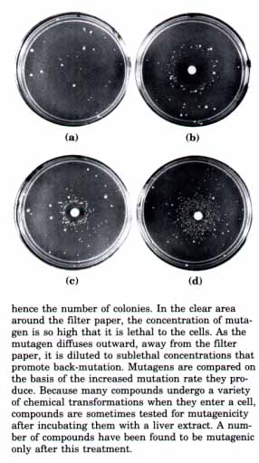 Figure 24-17 The Ames test for carcinogens, based on their mutagenicity. Salmonella typhimurium cells having a mutation that inactivates an enzyme of the histidine biosynthetic pathway are plated on a histidine-free medium. Most of the cells are unable to grow. (a) The few small colonies of histidine-less S. typhimurium that do grow on a histidine-free medium are the result of spontaneous back-mutations. To each of three identical nutrient plates (b), (c), and (d) inoculated with an equal number of cells has been added a disk of filter paper containing three different mutagens, which greatly increase the rate of back-mutation and hence the number of colonies. In the clear area around the filter paper, the concentration of mutagen is so high that it is lethal to the cells. As the mutagen diffuses outward, away from the filter paper, it is diluted to sublethal concentrations that promote back-mutation. Mutagens are compared on the basis of the increased mutation rate they produce. Because many compounds undergo a variety of chemical transformations when they enter a cell, compounds are sometimes tested for mutagenicity after incubating them with a liver extract. A number of compounds have been found to be mutagenic only after this treatment. |
Defects in genes that encode DNA repair enzymes can have catastrophic effects. A rare human genetic disease called xeroderma pigmentosum is caused by a defect in the multienzyme process by which pyrimidine dimers and other bulky lesions in DNA are repaired. Many of these lesions are induced by LTV light (see Fig. 12-33), and patients with this disease rapidly develop multiple skin cancers if exposed to sunlight.
The genome of a typical mammalian cell accumulates many thousands of lesions in a 24-hour period. However, as a result of DNA repair, less than one lesion in 1,000 becomes a mutation. DNA is a relatively stable molecule, but without repair systems the cumulative effect of many infrequent but damaging reactions would make life impossible.
The number and diversity of repair systems reflect the importance of DNA repair to cell survival and the diverse sources of DNA damage. For some common types of lesions there is even a built-in redundancy, with several distinct systems available to repair them (e.g., pyrimidine dimers; Table 24-5). As a complementary theme, it is worth noting that many DNA repair processes appear to be extraordinarily inefficient in an energetic sense. This represents an exception to the pattern observed in the metabolic pathways, as described in Part III, where every ATP is generally accounted for and used optimally. When the integrity of the genetic information is at stake, the amount of chemical energy invested in a repair process seems to be almost irrelevant.
DNA repair is possible largely because the DNA molecule consists of two complementary strands. DNA damage in one strand can be removed and accurately replaced by following the template instructions in the undamaged complementary strand.
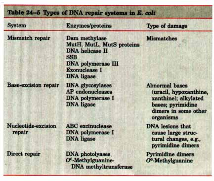
We now turn to a consideration of the principal classes of repair systems, beginning with those that repair the rare nucleotide mismatches that are left behind by replication.
| Mismatch Repair The
correction of mismatches after replication in E. coli
improves the overall fidelity of the replication process
by a factor of 102 to 103. The mismatches are nearly
always corrected to correspond to the information in the
template strand, thus the system must somehow
discriminate between the template and the newly
synthesized strand. The cell accomplishes this
discrimination by tagging the old (template) DNA with
methyl groups to distinguish it from newly synthesized
strands. The mismatch repair system of E. coli includes
at least nine protein components (Table 24-5) that
function either in strand discrimination or in the repair
process itself. Strand discrimination is based on the action of an enzyme called the Dam methylase, which methylates DNA at the N6 position of all adenines that occur within (5')GATC sequences. Immediately after replication there is a short lag (a few seconds or minutes) during which the template strand is methylated but the newly synthesized strand is not yet methylated (Fig. 24-18). It is this transient undermethylation of GATC sequences in the newly synthesized strand that permits strand discrimination. Replication mismatches in the vicinity of a GATC sequence are then repaired according to the information in the methylated parent (template) strand. If both strands are methylated at a GATC sequence, little repair occurs. If neither strand is methylated, repair occurs but does not favor either strand. This system, sometimes referred to as methyl-directed mismatch repair, correctly repairs mismatches as much as 1,000 base pairs distant from a partially or hemimethylated GATC sequence. The mechanism by which mismatch corrections are directed by relatively distant GATC sequences is not completely understood, but the proteins involved have been purified from E. coli cells and the reaction has been reconstituted in vitro. This work has inspired the model illustrated in Figure 24-19. The MutS, MutH, and MutL proteins play key roles in the process. The MutS protein binds to a wide range of mismatched base pairs. The MutH protein binds to GATC sequences. MutL may be an interface protein, linking the MutS and MutH proteins in a complex. If only one of the two strands is methylated at the GATC sequence and a mismatched base pair exists nearby (within ~1,000 base pairs), the MutH protein acts as a site-specific endonuclease, cleaving the unmethylated strand on the 5' side of the G in GATC thereby marking the strand for repair. Further steps in the pathway depend upon where the mismatch is located relative to this cleavage site. When the mismatch is on the 5' side of the cleavage site, evidence suggests that the unmethylated strand is unwound and degraded in the 3'→5' direction from the cleavage site through the mismatch, and replaced with new DNA. |
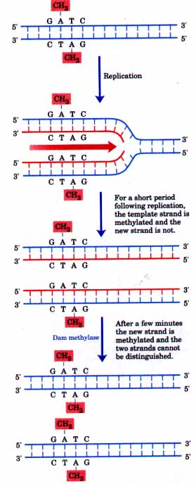 Figure 24-18Methylation of DNA strands can serve to distinguish parental (template) strands from newly synthesized strands in E. coli DNA, a function which is critical to mismatch repair (Fig. 24-19). The methylation occurs at N6 of adenines (Fig. 12-5a) in (5')GATC sequences. This sequence is a palindrome (see Fig. 12-20) and thus is present in opposite orientations on both strands. |
| This process requires the combined
action of DNA helicase II, SSB, exonuclease I (which
degrades only singlestranded DNA in the 3'→5' direction),
DNA polymerase III, and DNA ligase (Fig. 24-19). The
pathway for repair of mismatches on the 3` side of the
cleavage site is similar, except that exonuclease VII
(which degrades single-stranded DNA, 5'→3' or 3'→5') or
Rec~T protein (an exonuclease that degrades
single-stranded DNA 5'→3') replaces exonuclease I. Energetically, mismatch repair is a particularly expensive process. The mismatch may be 1,000 base pairs or more from the GATC sequence, and the degradation and replacement of a strand segment of this length represents an enormous investment in activated deoxynucleotide precursors to repair a single DNA mismatch. This once again illustrates the importance of DNA repair to the cell. All mismatches are recognized and repaired by this system, but not equally well. Those that stand out are G-T mismatches, which are generally repaired more efficiently than the others, and C-C mismatches, which are repaired poorly. Base-Excision Repair Every cell has a class of enzymes called DNA glycosylases that recognize particularly common DNA lesions (such as the products of cytosine and adenine deamination; see Fig. 12-32a) and remove the affected base by cleaving the N-glycosyl bond. This creates an apurinic or apyrimidinic site in the DNA, both commonly referred to as abasic or AP sites. Each DNA glycosylase is generally specific for one type of lesion. An example common to most cells is uracil glycosylase, which removes from DNA the uracil that results from spontaneous deamination of cytosine. This glycosylase is of necessity very specific; it does not remove uracil residues from RNA, nor does it remove thymine residues from DNA. The problem posed by cytosine deamination suggests a reason for the long-puzzling fact that DNA contains thymine instead of uracil (p. 344). |
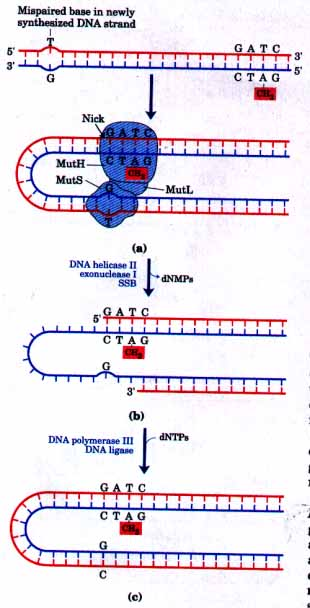 Figure 24-19 A model for methyl-directed mismatch repair. The proteins involved in this process in E. coli have been purified (see Table 24-5). Recognition of the sequence GATC and of the mismatch are specialized functions of the MutH and MutS proteins, respectively. (a) The MutL protein links the MutH and MutS proteins together in a complex. The MutH protein cleaves the unmethylated strand on the 5' side of the G in the GATC sequence. (b) The combined action of DNA helicase II, exonuclease I, and SSB then removes a segment of the new strand between the cleavage site and a point just beyond the mismatch. (c) The resulting gap is filled in by DNA polymerase III, and the nick is sealed by DNA ligase. |
Other DNA glycosylases recognize and remove hypoxanthine (arising from adenine deamination) and alkylated bases such as 3-methyladenine and 7-methylguanine. Glycosylases that recognize other lesions, including pyrimidine dimers, have been identified. Remember that AP sites also arise from the slow, spontaneous hydrolysis of the N-glycosyl bonds in DNA (see Fig. 12-32b).
Once an AP site has been formed, another group of enzymes must repair it. The repair is not made by simply inserting a new base and re-forming the N-glycosyl bond. Instead, the deoxyribose 5'-phosphate left behind is removed and replaced with a new nucleotide. This process begins with enzymes called AP endonucleases, which cut the DNA strand containing the AP site. The position of the incision relative to the AP site (5' or 3') varies with different AP endonucleases. A segment of DNA including the AP site is then removed, the DNA is replaced by the action of DNA polymerase I, and the remaining nick is sealed by DNA ligase (Fig. 24-20).
| Nucleoticle-Excision Repair
DNA lesions that cause large distortions in the helical
structure of DNA generally are repaired by the
nucleotide-excision system. In E. coli the key enzyme is
made up of three subunits, products of the uvrA, uvrB,
and uvrC genes, and is called the ABC excinuclease (M,.
246,000). This enzyme recognizes many types of lesions,
including cyclobutane pyrimidine dimers, 6-4
photoproducts (see Fig. 12-33), and several other types
of base adducts. The ABC excinuclease's nucleolytic
activity is novel in the sense that two cuts are made in
the DNA (Fig. 24-21). The term "excinuclease"
is meant to distinguish this activity from that of
standard endonucleases. 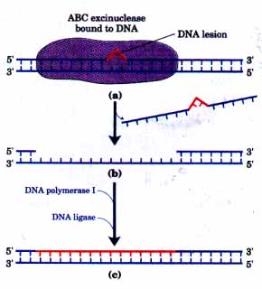 Figure 24-21 The mechanism of nucleotide-excision repair in E. coli. (a) A specialized nuclease (the ABC excinuclease; see Table 24-5) binds to DNA at the site of a bulky lesion and cleaves the damaged strand at the eighth phosphodiester bond on the 5' side of the lesion and at the fourth or fifth phosphodiester bond on the 3' side. (b} The excinuclease then removes the resulting 12 to 13 base pair oligonucleotide that spans the damaged base. (c) The resulting gap is filled in by DNA polymerase I and sealed by ligase. |
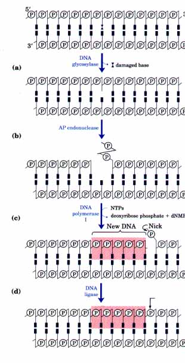 Figure 24-20 Repair by the base-excision repair pathway. (a) DNA glycosylase recognizes a damaged base and cleaves between the base and deoxyribose in the backbone. (b) An AP endonuclease cleaves the phosphodiester backbone near the AP site. (c) DNA polymerase I initiates repair synthesis from the free 3' OH at the nick, removing a portion of the damaged strand (with its 5'→3' exonuclease activity) and replacing it with undamaged DNA. (d) The nick remaining after DNA polymerase I has dissociated is sealed by DNA ligase. |
Direct Repair Several types of damage are repaired without removing a base or nucleotide. The best-characterized example is direct photoreactivation of cyclobutane pyrimidine dimers, a reaction promoted by DNA photolyases. Pyrimidine dimers result from a light-induced reaction, and photolyases use energy derived from absorbed light to reverse this damage (Fig. 24-22). Photolyases generally contain two cofactors that serve as light-absorbing agents, or chromophores. One of the chromophores is always FADH2. The other is a folate in E. coli and yeast.
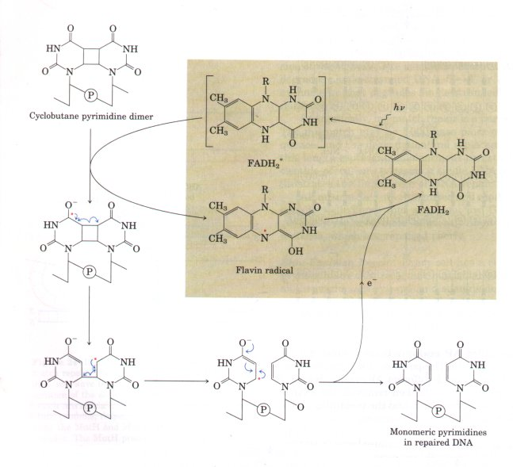
Figure 24-22 Repair of pyrimidine dimers with photolyase. Shown here is a simplified representation of a pyrimidine dimer (see Fig. 12-33). Energy derived from absorbed light is used to reverse the photoreaction that caused the Iesion. The two chromophores in E. coli photolyase (M~ 54,000), 5,10-methenyltetrahydrofolate and FADH2, complement each other in terms of the light wavelengths at which they absorb efl'iciently. Most of the photoreactivating light energy is absorbed by the folate and transferred to FADH2; some is absorbed directly by FADH2. The resulting excited form of FADH2 [FADH2*] transfers an electron to the pyrimidine dimer, regenerating FADH2. The resulting pyrimidine dimer species (which contains a free radical) is unstable and breaks down to form the monomeric pyrimidines.
Another example is the repair of O6-methylguanine, which forms in the presence of alkylating agents and is a common and highly mutagenic lesion. It tends to pair with thymine rather than cytosine during replication, and therefore causes G=C to A=T mutations (Fig. 24-23).
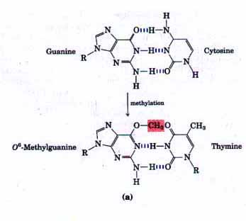 Figure 24-23 An example of how DNA damage results in mutations. The methylation product Q6methylguanine pairs with thymine rather than cytosine (a). If not repaired, this leads to a G=C to A=T mutation after replication (b) Direct repair of O6-methylguanine is carried out by O6-methylguanineDNA methyltransferase, which catalyzes the transfer of the methyl group of O6-methylguanine to a specific Cys residue on the same protein. This methyltransferase is not strictly an enzyme, because a single methyl transfer event inactivates the protein. The consumption of an entire protein molecule to correct a single damaged base is another vivid illustration of the central importance of maintaining the integrity of cellular DNA 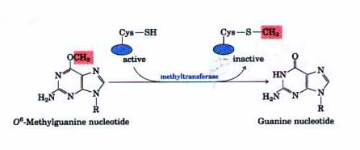 |
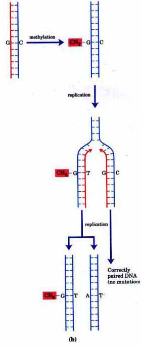 |
Up to this point, our discussion has focused on the accurate repair of the relatively rare DNA lesions that occur daily in any cell. However, in E. coli, when the chromosome is subjected to heavy damage through exposure to UV light or a DNA-damaging reagent, DNA repair becomes significantly less accurate and a high mutation rate is observed. This is referred to as error-prone repair, a distinct and unusual pathway.
Given the energetic investment made to maintain the structural and sequence integrity of cellular DNA, it may seem incongruous that mechanisms exist to increase mutation rates. As is often the case in biochemistry, however, an examination of an apparent exception to a general rule can throw light on the rule itsel?In this instance we must examine the complex interrelationships among repair, replication, and recombination. In E. coli, normal DNA replication with DNA polymerase III cannot proceed past many types of DNA lesions. Under normal circumstances, most lesions are repaired before the replication complex arrives. The occasional unrepaired lesion blocks replication, but replication begins again beyond the site of the lesion (Fig. 24-24) and the lesion itself can eventually be repaired with the aid of recombination processes (postreplication repair) described later in this chapter. Higher levels of DNA damage, however, effectively bring normal DNA replication to a halt and trigger a stress response in the cell involving a regulated increase (induction) in the levels of a number of proteins. This is called, appropriately enough, the SOS response. Some of the proteins induced, such as the UvrA and UvrB proteins, have roles in DNA repair (Table 24-6). A number of the induced proteins, however, are part of a specialized replication system that can replicate past the DNA lesions that block DNA polymerase III. Because proper base pairing is often impossible at the site of a lesion, this translesion replication is error-prone. The resulting increase in mutagenesis does not contradict the general principle that replication accuracy is importantthe resulting mutations actually kill many cells. This is the biological price that is paid, however, to overcome the general barrier to replication and permit at least a few mutant cells to survive.
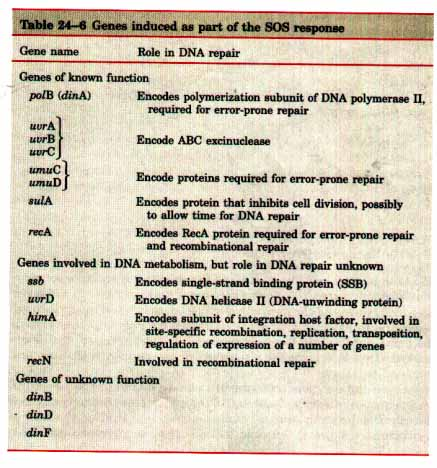
| Translesion replication requires DNA
polymerase III, as well as the activities of the UmuC,
UmuD, and RecA proteins. The mechanism by which the
latter three proteins permit DNA polymerase III to
replicate past DNA lesions is not understood. DNA
polymerase II may also play a role in error-prone DNA
repair. This polymerase is induced as part of the SOS
response and, unlike DNA polymerase III, is capable of
limited replication past lesions such as AP sites. This
enzyme has some of the same subunits as DNA polymerase
III. The RecA protein merits some additional discussion because it has several distinct functions (besides mutagenesis) in the bacterial cell. RecA protein is involved in recombination and in the regulation of the SOS response, and in these cases its molecular function is well characterized. The regulation of the SOS response is described in Chapter 27. We now turn to a discussion of genetic recombination. Figure 24-24 DNA damage and its effect on DNA replication. If an unrepaired lesion is encountered at the replication fork, replication generally stops and is resumed farther along the chromosome. The lesion is left behind in an unreplicated, singlestranded segment of the DNA. There are two possible avenues for repair. The recombinational pathway, called postreplication repair, is described in Fig. 24-34. When lesions are so numerous that normal replication is inhibited, a second repair mechanism operates. The specialized system uses DNA polymerase II and can replicate over many · types of lesions. This is called error-prone repair because mutations often result. |
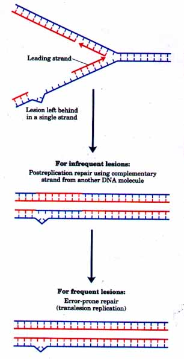 |